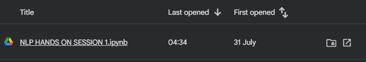

ACTIVITY 01
Hands-on Session 1
Exploring Natural Language Processing with NLTK. This practical session introduces NLTK and basic text-processing workflows. The notebook explores tokenization, built-in corpora, word-frequency analysis, stopword filtering and word-cloud comparisons of inaugural speeches.
Python · NLTK · Corpus AnalysisObjectives
- Set up NLTK and download its language resources.
- Tokenize a sample sentence using word_tokenize().
- Explore the Brown Corpus and Inaugural Address Corpus.
- Use FreqDist and ConditionalFreqDist to examine word frequencies.
- Remove English stopwords before analysing text.
- Compare word clouds generated from selected Obama and Trump inaugural speeches.
Concepts & Implementation
NLTK setup
Import NLTK, download the required resources and inspect the installed version.
Tokenization
Apply word_tokenize() to a short sentence and observe the resulting tokens.
Corpus exploration
Inspect Brown Corpus categories and access speeches from the Inaugural Address Corpus.
Frequency analysis
Create a FreqDist for an inaugural speech and a ConditionalFreqDist grouped by word length.
Stopword filtering
Load English stopwords and create a filtered token list.
Word-cloud comparison
Combine the 2009 and 2013 Obama speeches and the 2017 and 2025 Trump speeches, then generate separate word clouds.
Activity Materials
Click an image to view it at full size.

Learning Outcomes
- Practised basic NLTK setup and tokenization.
- Explored text corpora and retrieved speech text by file ID.
- Applied frequency distributions to a text corpus.
- Understood the effect of stopword removal on word-frequency analysis.
- Created a visual comparison of word usage across two groups of inaugural speeches.
Download Activity Files
Content on this page is organised from the materials supplied in the activity folder. Any interpretation beyond those materials has been kept to a minimum.